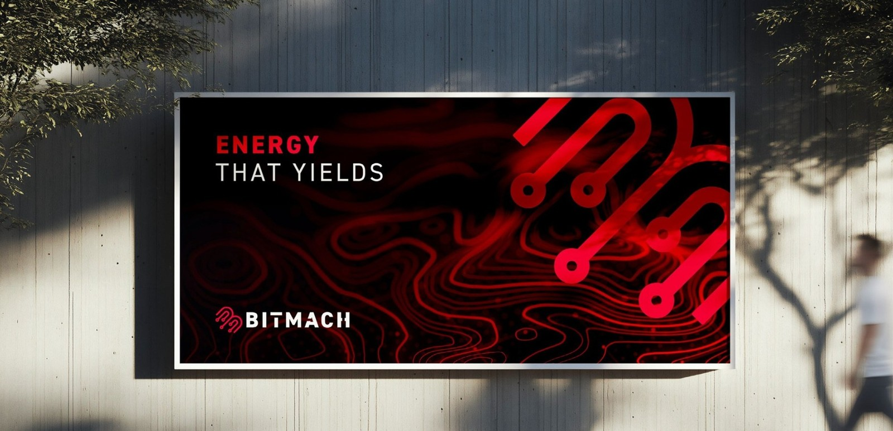

Energy-linked digital infrastructure
WHERE POWER BECOMES DIGITAL INFRASTRUCTURE.
BitMach develops modular, grid-responsive infrastructure that turns underutilised electricity into flexible compute capacity. The platform starts with programmable demand and is built to evolve toward broader AI and high-performance compute over time.

THE SHIFT
The new constraint is not only generation. It is coordination: how to absorb surplus energy, respond to system stress, and turn power availability into productive digital output.
THE ROLE
BitMach acts as a controllable demand layer between electricity infrastructure and the next generation of digital workloads.
THE DIRECTION
The platform begins with the most interruptible industrial-scale compute available today, then moves up the stack toward higher-value digital infrastructure.
The BitMach platform
ONE INFRASTRUCTURE BASE. MULTIPLE COMPUTE LAYERS.
BitMach is structured as an energy-linked digital infrastructure platform. The same electricity and control backbone can be monetised through progressively higher-value compute layers over time.
Energy infrastructure
Power access, substations, interconnection, land, control boundaries and the physical layer that enables deployment.
Flexible digital load
Programmable demand that can absorb available power and curtail rapidly when system conditions tighten.
Compute-ready platform
Electrical, cooling, monitoring and operating systems designed to support broader digital workloads.
AI and HPC direction
Over time, the platform is designed to support AI, HPC and multi-tenant digital infrastructure use cases.
System role
DESIGNED FOR SYSTEM VALUE, NOT JUST COMPUTE OUTPUT.
The platform is designed to improve the usefulness of existing electricity infrastructure while creating a base for higher-value digital services.
Absorb surplus energy
Turn underutilised electricity into measurable digital output when power is available.
Curtail rapidly
Reduce demand in fast, modular steps when plant or grid conditions require it.
Support digital infrastructure
Build the electrical, cooling and control backbone that future compute layers can use.
Enable broader compute
Create a platform that can evolve toward AI, HPC and enterprise digital workloads.
Infrastructure pathway
THE PLATFORM IS BIGGER THAN ANY SINGLE WORKLOAD.
Bitcoin is not the business identity. It is the first programmable workload because it is interruptible, immediately monetisable and compatible with the same electrical and control infrastructure required for broader compute over time.
In other words: the platform is bigger than Bitcoin, but Bitcoin is the most practical place to start.
Phase 1 anchor
Programmable compute load, day-one monetisation and real-world demand-response proof.
Grid-linked infrastructure
Operating data, control systems, cooling architecture and scalable deployment disciplines.
Higher-value compute
AI, HPC and multi-tenant digital workloads added onto the same infrastructure base.
Selected public signals
THIS DIRECTION IS ALREADY PART OF THE PUBLIC CONVERSATION.
Public commentary around Eskom, flexible demand, Bitcoin mining and data infrastructure already points toward the same convergence: power, responsiveness and digital capacity.
Publicly linked Eskom's future growth thinking to Bitcoin, AI and data centres.
View sourceHas publicly framed mining as a flexible buyer of last resort that can stabilise the grid.
View sourceHas publicly argued that flexible mining load can turn surplus electricity into revenue while remaining rapidly interruptible.
View sourceHas publicly spoken about the idea of selling excess daytime capacity to Bitcoin miners.
View sourceLeadership and engineering depth
THE TEAM PAIRS MARKET ACCESS WITH DEEP INFRASTRUCTURE EXPERIENCE.
BitMach's public-facing leadership combines technology, capital markets, engineering and operating depth - supported by an engineering bench built for industrial-grade deployment.
Rob Hersov
Co-Founder & Executive Chairman
International capital markets and investor network, with background across Goldman Sachs, Morgan Stanley and Richemont, and a Harvard MBA. Leads senior relationship architecture and strategic positioning.
Stafford Masie
CEO & Co-Founder
Former MD of Google South Africa with a decades-long technology career spanning entrepreneurship, fintech, blockchain and emerging digital infrastructure across Africa.
Carel de Jager
Co-Founder & CTO
Power-station engineer and blockchain specialist. Leads technical strategy, infrastructure design and deployment architecture, drawing on Eskom, CSIR and digital-asset engineering experience.
Engineering capability
BUILT FOR POWER INFRASTRUCTURE, CONTROL SYSTEMS AND INDUSTRIAL RELIABILITY.
The engineering bench combines power-station operations, industrial asset management, control and instrumentation, electrical interconnection, software integration, mechanical systems and high-availability maintenance planning.
Contact BitMach
BUILD THE LAYER BETWEEN POWER AND COMPUTE.
For platform, partnership or strategic enquiries, get in touch.